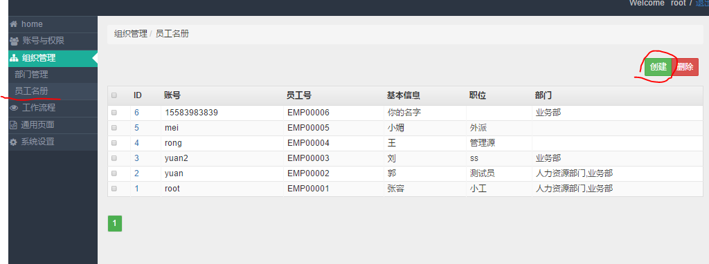

1. 录入员工¶
一个员工需要一个账号和一条员工记录。
- 账号可由管理员分配，也可由员工自己在登录界面处注册。
- 员工记录只能由管理员为员工生成，生成后，可以由员工自己编辑自己的相关资料。
1.1. 创建账号¶
账号创建截图
账号编辑截图
红色的星号表示“用户名”是必填的，其就是登陆账号。左上角是修改用户密码，点击可以修改用户密码。
其他字段都有帮助说明，一般的员工需要勾选“有效”，“职员状态”。
权限组，只选择assem开始的权限赋予员工。（具体查看: 人员权限）
1.2. 创建员工记录¶

员工记录截图
创建时，或者点击已有员工ID号，可以进入员工信息编辑页面。创建员工时，可以选择员工的“账号”，可选账号是那些未被分配给员工的账号。
员工信息编辑截图
点击保存后，数据库将生成员工记录。这时刷新页面可以看到全面的员工信息标签。
员工信息全部标签截图
其中“基本信息”可以由员工在移动端自己填写。